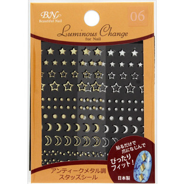

返回列表
产品名称：ルミナスチェンジ アンティークメタル調スタッズシール

ビー・エヌ ルミナスチェンジ アンティークメタル調スタッズシール ＬＣＮＦ－０６アンティー
メーカー ビー・エヌ
JANコード 4965266029881
商品の特徴
貼るだけで爪になじんでぴったりフィット！
特許取得済
ラバー素材だから柔軟で爪にぴったりなじみます。
アンティークの風合が落ち着きのある指先を演出します。
成分・分量
-
用法及び用量
＜使用方法＞
きれいな乾いた爪に貼った後、上からしっかり押さえてください。
トップコートを塗ると長持ちします。
○はがし方
はしからめくるようにゆっくりはがしてください。トップコートを塗った時は、リムーバーをご使用ください。